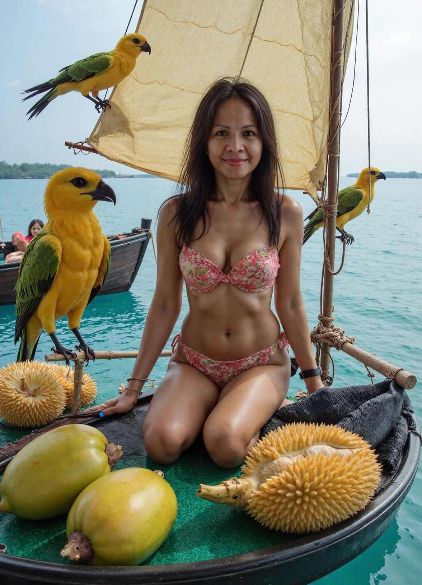
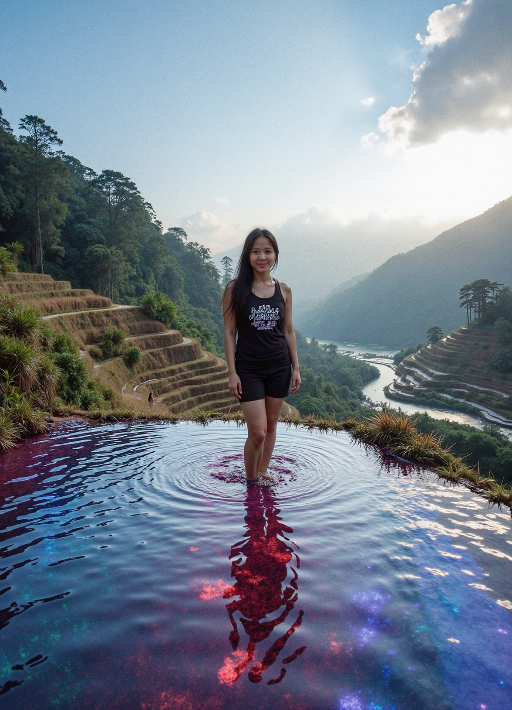
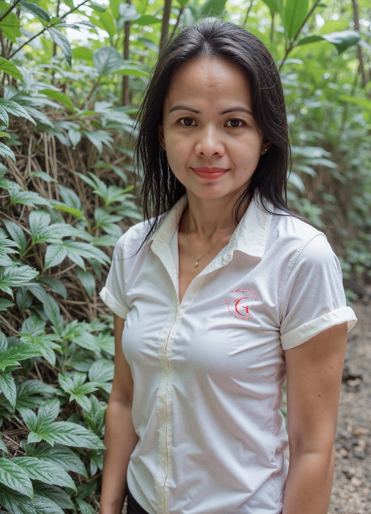

A Filipina. A Domestic Worker by Day. A Woman who Prides Herself on Moral Upbringing and Fidelity. An adventurer by Night.
Click to Explore, Download Freely, Share Her Generously.
She walks the edge of devotion and rebellion. From Domestic Silence to the neon-tinted streets, Joyce lives with intense depth. Get to know the shadows behind the smile.
A quiet smolder in motion — caught mid-turn, her hips speak a language the mouth never could.Confident, raw, and magnetic — this is Joyce stepping fully into her story.The mirror doesn’t lie — only dares her to keep going.Capturing softness in strength, and stillness in the storm.She doesn't pose — she invites.Unspoken invitation — the way she lingers says everything.Even silence wraps itself around her differently.A fleeting glance, but you’ll never forget it.